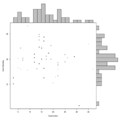

Y~Y Plot
Base Version (With Bar Charts)
Uses

- To display "Y~Y Plot" plots with a histogram of the Y and X axis
- Good for checking Y variables according to 'ID'
Source Code
Please source this code (yy-base-code.txt) so that 'yyplot' may work properly
Notes
- It is NOT plotted using Lattice
- Does not work with the functions under the 'Variations' tab
- Similar to Lattice in where one function does a lot of work
- Should be plotted with two Y variables, i.e. WRES and PRED
- Uses a grid-like setup to plot the data
- The examples use a parameter called 'mar', par("mar")
- "A numerical vector of the form c(bottom, left, top, right) which gives the number of lines of margin to be specified on the four sides of the plot. The default is c(5,4,4,2) + 0.1"
- The goal when using 'mar', in this context, is to keep the layout of the plots symmetrical over a y=x line
- Example from the top histogram:
par(mar=c(0,4,1,0)) # No gap between plots
par(mar=c(gap between plots, space for axis and labels of middle plot, space for title of all plots, being flush with the middle plot on the right))
- All Data being sent to 'yyplot' must be ready to plot, with no filtering, to work properly
- AMT is not used
- Lines are not used
- If there are more plots than the value for 'max.plots', all remainder plots will appear the same size as the first page and will have blank space. Ex. 100 plots & max.plots = 16, the remaining 4 plots on the last page will be plotted as if there are 16 plots. The page produced will contain 4 real plots and 12 invisible plots.
- MORE NOTES
Arguments
- x.column
- - Column name containing all 'good' X data
- y.column
- - Column name containing all 'good' Y data
- split.column
- - Column name containing the column for which the data is split by. If you do not want to split your data, split.column = FALSE
- data
- - Matrix where the data is pulled from
- ratio
- - Percentage of the X and Y direction given to the scatter plot
- title
- - Title of all plots (at the top of the page)
- cex.title
- - Cex of the Title at the top of the page
- xlab
- - X label
- ylab
- - Y label
- color.of.middle.plot
- - Color of points in the middle scatter plot. Good place to use the function 'color.gen'
- number.of.bars
- - Number of bars that are in the bar charts
- abline.list
- - List or Logical.
- - If you do not want to plot an abline, abline.list = FALSE
- - Or it MUST contain all of the fields below spelled exactly the same or will not be plotted
- intercept - Intercept on the Y axis
- slope - Slope of line
- color - Color of line
- legend - Name supplied to the 'Legend'
- - Example form
abline.list = list(
intercept = c(0),
slope = c(1),
color = "red",
legend = "(0,1) Line"
)
- loess.list
- - List or Logical.
- - If you do not want to plot an loess line, loess.list = FALSE
- - Or it MUST contain all of the fields below spelled exactly the same or will not be plotted
- color - Color of line
- span - Span supplied to 'Loess.smooth'
- legend - Name supplied to the 'Legend'
- - Example form
loess.list = list(
color = "blue",
span = 5/6,
legend = "(0,1) Line"
)
- max.plots
- - Maximum number of plots that are on each 'page'
- top.down
- - Logical. Tells the function to plot the plots from the top-down or bottom-up
Common Examples
Base Code for Y~Y Base Examples
See the example code for the common example of Points and Histograms.